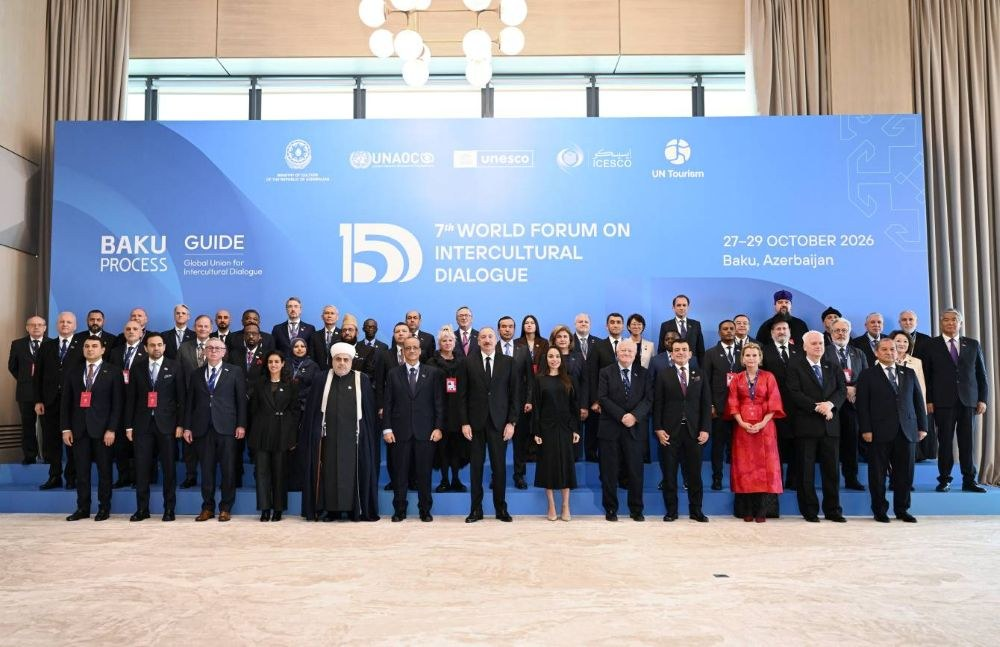

DYNAMES
DYNAMESIl 7° Forum Mondiale sul Dialogo Interculturale si è concluso a Baku confermando la capitale azerbaigiana come uno dei laboratori diplomatici e strategici più rilevanti per ripensare le dinamiche della cooperazione globale. Svoltosi in un contesto internazionale caratterizzato da crescenti polarizzazioni, conflitti regionali e da una complessa ridefinizione degli equilibri multilaterali, l’evento ha riunito capi di Stato e di Governo, rappresentanti delle Nazioni Unite, studiosi e leader religiosi attorno a un obiettivo globale: trasformare il dialogo tra culture da mero esercizio teorico a strumento operativo di diplomazia preventiva e stabilità geopolitica.
Al centro dei lavori si è collocata la prosecuzione del “Processo di Baku”, la piattaforma strategica lanciata nel 2008 dall’Azerbaigian in collaborazione con le principali organizzazioni internazionali. Il Forum ha dimostrato come la posizione geografica e storica dell’Azerbaigian, naturale ponte tra Oriente e Occidente, tra mondo islamico ed europeo, consenta al Paese di esercitare una mediazione efficace in una fase storica segnata dalla frammentazione. Le varie sessioni di dibattito hanno affrontato le principali urgenze del presente, evidenziando come la sicurezza e lo sviluppo economico siano indissolubilmente legati al rispetto della diversità e al rafforzamento della fiducia reciproca tra i popoli.
Nel corso dei suoi interventi ufficiali, il Presidente dell’Azerbaigian Ilham Aliyev ha ribadito il valore dell’esperienza azerbaigiana in materia di convivenza interculturale e interreligiosa. Gli esperti di geopolitica e gli analisti internazionali hanno dato ampio risalto ai passaggi dedicati all’unità nazionale dimostrata dal Paese durante i momenti più complessi della sua storia recente, come la Seconda Guerra del Garabagh. In tale circostanza, cittadini appartenenti a differenti etnie e confessioni religiose hanno combattuto e collaborato compatti per la difesa della sovranità e dell’integrità territoriale. Questo impianto concettuale è stato presentato alla comunità internazionale non solo come elemento identitario interno, ma come modello strutturato di coesione sociale capace di garantire stabilità duratura anche all’interno di scenari politici complessi.
Un focus di primaria importanza all’interno dei dibattiti è stato riservato alle sfide poste dall’innovazione tecnologica e dalla transizione digitale. La sessione speciale organizzata in collaborazione con l’UNESCO e i ministeri di settore ha analizzato il rapporto tra intelligenza artificiale, algoritmi ed etica pubblica. È emerso con chiarezza come il divario digitale e il rischio di polarizzazione veicolato dalle nuove piattaforme d’informazione possano alimentare pregiudizi e divisioni se non governati da quadri regolatori inclusivi. I partecipanti hanno concordato sulla necessità di promuovere una digital literacy globale che valorizzi le differenze culturali, garantendo che i processi di automazione e le tecnologie emergenti diventino strumenti al servizio della coesione sociale anziché fattori di discriminazione.

Parallelamente, il Forum ha dedicato un'ampia sezione al ruolo delle industrie culturali, delle città d’arte e del turismo innovativo e sostenibile quali fattori chiave per la rigenerazione dei territori e il rafforzamento della diplomazia culturale. Con il supporto di UN Tourism, l’Organizzazione Mondiale del Turismo, e dell’ICESCO, si è discusso di come la tutela del patrimonio materiale e immateriale possa fungere da motore economico e al contempo da catalizzatore di pace. In questo contesto, le analisi emerse hanno sottolineato gli sforzi di ricostruzione e valorizzazione culturale in corso nelle aree del Garabagh e dell’Est Zangezur, dove gli interventi di ripristino dei monumenti storici e delle infrastrutture mirano a favorire il reinserimento delle comunità locali e a restituire completezza alla memoria storica della regione.
I lavori si sono estesi anche al ruolo fondamentale delle giovani generazioni e dei sistemi educativi nella prevenzione dei radicalismi e dell’incitamento all’odio. Durante i panel dedicati alle politiche giovanili, si è evidenziato come l’istruzione debba evolvere per formare cittadini consapevoli delle complesse dinamiche globali e capaci di muoversi in ambienti multiculturali. Promuovere programmi di scambio scolastico e accademico, favorire la mobilità internazionale e sostenere la formazione dei media sulle tematiche del rispetto etnico e religioso sono state individuate come precondizioni indispensabili per costruire reti durature di cooperazione tra Paesi appartenenti a diverse aree geografiche.
A conclusione del summit, i partecipanti hanno espresso ampio consenso sulla necessità di dare continuità concreta alle raccomandazioni emerse dalle varie tavole rotonde. L’edizione 2026 del Forum di Baku ha così riaffermato l'importanza del multilateralismo concreto, informale e multilivello per affiancare la diplomazia tradizionale nella risoluzione delle controversie.
La capacità di far convergere rappresentanti di istituzioni sovrannazionali, attori economici e società civile sullo stesso piano di confronto conferma il Processo di Baku come un punto di riferimento consolidato nel panorama delle relazioni internazionali contemporanee, fornendo risposte concrete alla necessità di edificare un'architettura di pace stabile e inclusiva.